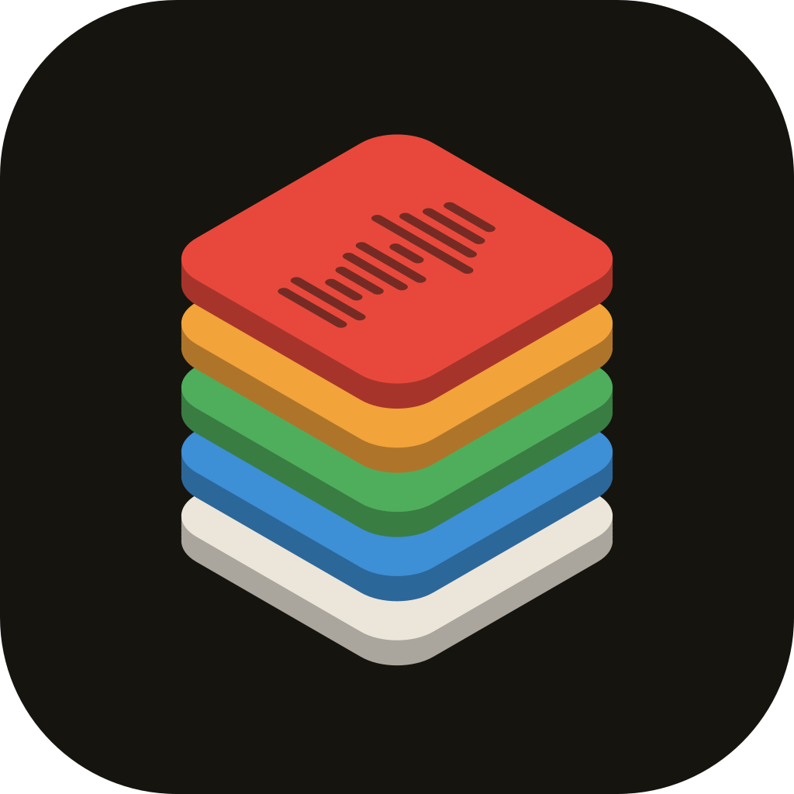
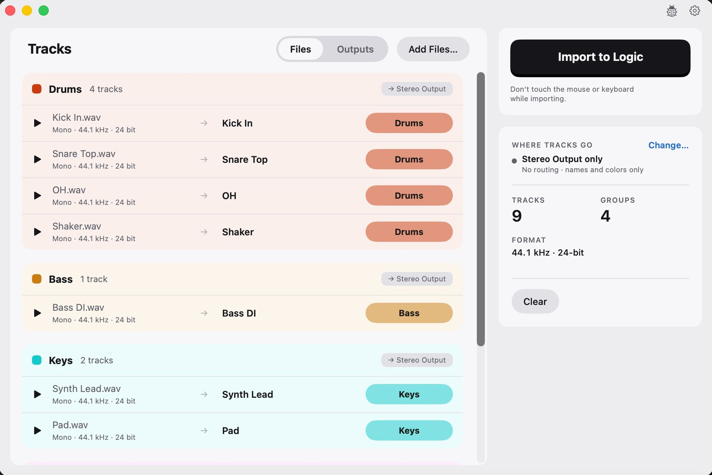

Primer for Logic ProMore time
spent mixing.
Take a walk, stretch your legs, grab a coffee. Primer is your hardworking assistant engineer, prepping your session while you're taking a break.

How it works
Hear it first.
The beta is invite-only. Leave your email and we'll tell you when Primer is out.
Release
An email when Primer is out.
Progress
Short updates while we work on the app.
New tools
News when a new Stroomdoos app is ready.
Made by an engineer, for engineers.
I'm Luc, and I make Primer in the Netherlands under the name Stroomdoos (/ˈstroːmdoːs/, Dutch for power box).